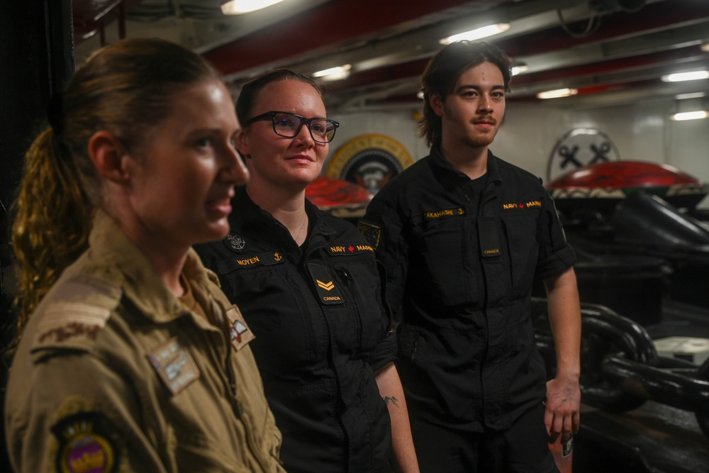

Seaman Recruit Alonzo Delarosa, U.S. Navy · DVIDS 10054391 · Public domain · Royal Canadian Navy sailors tour aircraft carrier USS Theodore Roosevelt during a passenger exchange with frigate HMCS Regina in Exercise Keen Sword 27, Oct. 26, 2026.
USNI News
Carrier Theodore Roosevelt is in the South China Sea after Keen Sword with Japan
USNI News places the carrier there as of Nov. 2, after the multilateral exercise ended Thursday. The battle force stands at 286 ships, with 104 deployed and 76 underway. Strike Group 9 includes cruiser Chosin and destroyers Paul Hamilton and Decatur, plus the unmanned surface vessel Seahawk. In Japan, amphibious assault ship Makin Island is in Yokosuka with the 13th Marine Expeditionary Unit. Littoral combat ship Minneapolis-Saint Paul is in the central Caribbean. Destroyers Oscar Austin, Bulkeley, and Stout are in the Mediterranean.
USNI News · Read source →